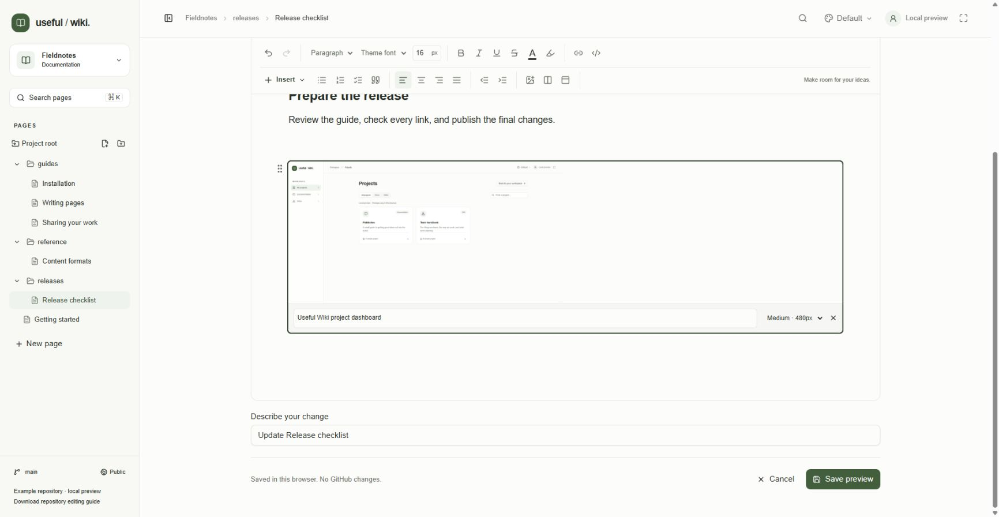
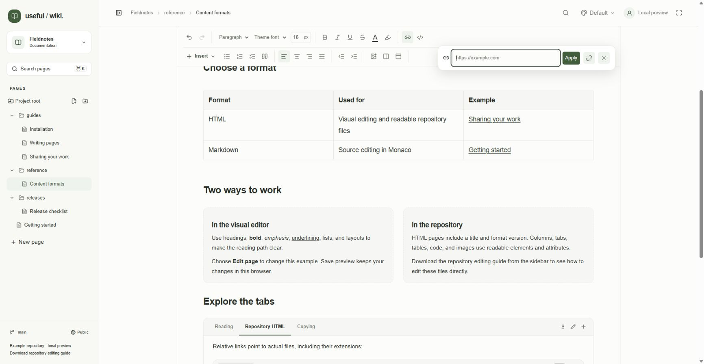

Add images and useful connections while editing an HTML or older rich-text page. The image controls upload real files to the repository; the link controls attach a destination to text. Markdown authors write references in source as described in Markdown and portable files.
Click Edit page and place the cursor where the image belongs.
Click Insert image and select one or more files. You can also paste image files from the clipboard or drag files onto a location in the document.
Wait for Adding image… to finish. A placeholder marks the insertion point while you continue writing or switch tabs.
Click the inserted image. Fill in Image alternative text with a short description of what it shows. The filename is used initially when no other description is supplied.
Choose Image width: Full width, Small · 240px, Medium · 480px, or Large · 720px. Imported custom widths can also appear in the menu. Images remain constrained by the available column or page width.
Save the page after all uploads have completed.
Useful Wiki accepts PNG, JPEG, GIF, WebP, and AVIF files up to 900,000 bytes each. SVG is not an upload format. This wiki limit is smaller than the reusable editor component's default. Resize or compress a large screenshot before adding it.

Local demo: selecting this pasted image reveals its alternative text and width controls. Demo images remain in browser storage.
An upload creates a separate file under the configured content root's assets/ directory, using a generated filename and a commit named Add documentation image. For a project rooted at docs, that directory is docs/assets/, even if the page is in a deeper folder. The page save is a separate commit that records the image reference.
While reading and editing, the app serves repository images through an authorized asset route. Saving HTML or rich JSON converts those temporary app URLs back to relative repository paths. A page beside the assets folder might contain <img src="assets/example.png" alt="Project setup dialog">; a page one folder deeper might use ../assets/example.png. Preserve these portable references when editing in Git.
Canceling a page edit or removing an image from its document does not delete an asset already uploaded to GitHub. Asset uploads happen immediately. Remove unused asset files separately in the repository after checking for other references. In the demo, images use browser-local data URLs and do not upload to GitHub.
Drag the image or its block handle to move it. Select the image and click Remove image to remove its reference from the page. The page edit can be undone.
If an upload fails, the placeholder displays Image could not be added and an explanation. Use Remove image upload, fix the file size, format, connection, or access problem, and add the file again. Reloading an unfinished upload does not resume it; an interrupted-upload message asks you to add it again. Removing a placeholder prevents a completed upload from being inserted back into the document.
Pasting HTML that already links to a remote image can retain that URL. It does not import the remote file into your repository. If you need a repository-owned copy, add an image file. Private repository image access is checked by Useful Wiki, just like page access.
Select the words you want to link and click Add or edit link.
Enter a destination in Link URL. Use a complete https:// or http:// address for a website. Email and telephone links use mailto: and tel:.
Click Apply or press Enter. Unsupported URL schemes produce a validation message.
To revise a link, place the cursor inside its text and reopen the control. Change the URL and apply it. Use Remove link, or clear the field and apply, to keep the text without its destination.
Use Close link editor or Escape to close the controls. Save, then test the link in reading view; a click in the editor is used for editing text.

Local demo: Add or edit link opens the URL field and the apply, remove, and close actions.
For a portable internal link entered through the visual link control, begin with / and include the full repository path. For example, /docs/01-getting-started.html points to a page under the repository's docs directory. The initial slash means repository root when Useful Wiki resolves page references; it does not mean the configured content folder.
You can also open the destination page, use Copy link, and paste that complete Useful Wiki URL into the link control. That URL is convenient for sharing, but it is tied to the site's address. A repository-path link remains portable and participates in the wiki's internal link relationships.
The current visual link control treats a bare value such as guide.html or ../guide.html as a website and prefixes https://. Use the leading-slash repository path in this control. Ordinary relative links are supported when written directly in HTML or Markdown source, such as <a href="01-getting-started.html">Getting started</a>. No page-search link picker is currently provided.
Repository page links power outgoing connections and backlinks; see Navigation and search. Keep destinations inside the project's configured content root. Renaming or moving a page does not rewrite its incoming links or relative image paths automatically, so review both after an organizational change.
Leave editing mode and open the intended page.
Click Copy link beside the page actions. A successful copy briefly changes the label to Copied.
If clipboard access is unavailable, copy the address from the browser as the app suggests.
A copied address does not grant access to a private repository. See Sharing and access for reader and contributor permissions.